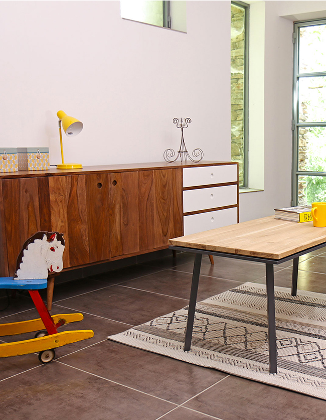

Avec ces quelques conseils, fabriquez vous votre table et recevez la dans 5 semaines
Les tables basses sont mises dans les salons, les salles télé, le jardin d'extérieur. Pour bien choisir, nous vous conseillons de suivre cette petite réfléctions. Tout d'abord, déterminez sa fonction, est-ce que vous souhaitez l'utiliser pour prendre l'apéro, jouer au carte, ou mettre des magasins, les pieds sur la table en regardant la télé.
Construire ma table

Table basse à 41cm.